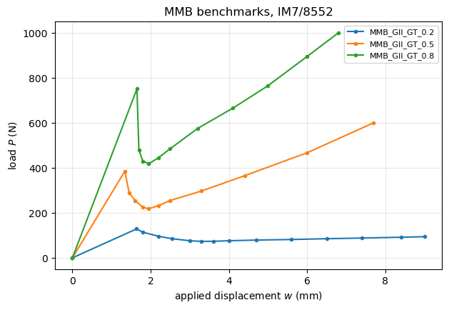
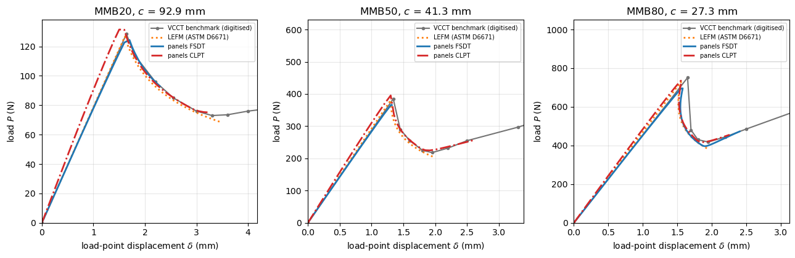

MMB benchmark of Krueger (2012), NASA/CR-2012-217562 and NASA/CR-2012-217588#
Krueger, Development and Application of Benchmark Examples for Mixed-Mode I/II Quasi-Static Delamination Propagation Predictions, NASA/CR-2012-217562, NIA Report No. 2012-01, 2012.
Krueger, Application of Benchmark Examples to Assess the Single and Mixed-Mode Static Delamination Propagation Capabilities in ANSYS, NASA/CR-2012-217588, NIA Report No. 2012-04, 2012.
This report contains no DCB case. Its benchmarks are for the mixed-mode bending (MMB) specimen at \(G_{II}/G_T\) = 0.2, 0.5 and 0.8, created with 2D plane strain FE models and the virtual crack closure technique (VCCT), and used to assess the VCCT propagation of ABAQUS; the second report applies the same benchmarks to ANSYS. The DCB benchmarks of the same series, R. Krueger, An Approach to Assess Delamination Propagation Simulation Capabilities in Commercial Finite Element Codes,
NASA/TM-2008-215123 (reference [3] of the report), are compared with panels in dcb_krueger2008.
The MMB data are recorded in mmb_cases below. The first version of this notebook could not run panels on these cases, because the damage of the SB_TSL connection was driven by the normal separation only and the loading lever was not modelled. The mixed-mode cohesive interface 'CZM' (theory: mixed-mode cohesive zone) and the MMB coupon of panels.multidomain.delamination.create_coupon, with the lever as a linear constraint, now allow it:
the section panels model compares panels, with CLPT and FSDT arms, with the benchmark and with linear elastic fracture mechanics (LEFM). The tests of the same material and apparatus are compared with panels in mmb_ratcliffe2014_im78552.
Digitised data. The benchmark curves of Figs. 10, 14 and 19 were read by eye, \(\pm 0.1\) mm and \(\pm 3\)% of the load. The critical points \((w_{crit}, P_{crit})\) are given in the text and are exact.
[1]:
%matplotlib inline
import os
import sys
import numpy as np
import matplotlib.pyplot as plt
from IPython.display import Markdown, display
sys.path.insert(0, os.path.abspath('.'))
import dcb_utils as du
import mmb_utils as mu
from panels.multidomain.connections.czm import BilinearLaw
# True runs panels and saves the results in RESULTS, False loads them
RERUN = bool(int(os.environ.get('MMB_RERUN', '0')))
RESULTS = 'results'
# comma-separated keys, e.g. MMB50_clpt, runs only these (used to run in parallel)
ONLY = os.environ.get('MMB_TESTS')
ONLY = ONLY.split(',') if ONLY else None
MMB benchmark data#
IM7/8552, Table 1 of the report, \(G_{Ic}\) = 0.212 N/mm, \(G_{IIc}\) = 0.774 N/mm and the Benzeggagh-Kenane exponent \(\eta\) = 2.1; the specimen of 25.4 mm width, 4.5 mm thickness and \(a_0\) = 25.4 mm. For each mixed-mode ratio \(G_{II}/G_T\), the lever length \(c\) of the MMB apparatus, the critical point \((w_{crit}, P_{crit})\) given in the text and the benchmark load-displacement curve digitised from the figures.
[2]:
im7_8552 = dict(E11=161000., E22=11380., E33=11380., nu12=0.32, nu13=0.32, nu23=0.45,
G12=5200., G13=5200., G23=3900.,
GIc=0.212, GIIc=0.774, eta_BK=2.1)
mmb_geometry = dict(b=25.4, h_total=4.5, L2=100.8, L2_star=152.4, a0=25.4, layup='[0]24')
mmb_cases = {
'MMB_GII_GT_0.2': dict(im7_8552, **mmb_geometry, c=92.9, wcrit=1.64, Pcrit=128.5,
source='Figs. 3, 9, 10',
benchmark=(np.array([0, 1.64, 1.8, 2.2, 2.55, 3.0, 3.3, 3.6, 4.0, 4.7, 5.6, 6.5, 7.4, 8.4, 9.0]),
np.array([0, 128.5, 114., 96., 85., 76., 73., 73.5, 76., 79., 81.5, 85., 88., 91.5, 94.]))),
'MMB_GII_GT_0.5': dict(im7_8552, **mmb_geometry, c=41.3, wcrit=1.34, Pcrit=385.,
source='Figs. 4a, 13, 14 (benchmark for applied displacement)',
benchmark=(np.array([0, 1.34, 1.45, 1.6, 1.8, 1.95, 2.2, 2.5, 3.3, 4.4, 6.0, 7.7]),
np.array([0, 385., 290., 255., 225., 218., 232., 255., 297., 365., 467., 600.]))),
'MMB_GII_GT_0.8': dict(im7_8552, **mmb_geometry, c=27.3, wcrit=1.65, Pcrit=751.,
source='Figs. 4b, 18, 19 (benchmark for applied displacement)',
benchmark=(np.array([0, 1.65, 1.7, 1.8, 1.95, 2.2, 2.5, 3.2, 4.1, 5.0, 6.0, 6.8]),
np.array([0, 751., 480., 430., 418., 445., 485., 575., 665., 765., 895., 1000.]))),
}
Table and plot of the benchmark data#
Initial stiffness and first peak of each digitised curve, dcb_utils.summary(..., first_peak=True); the first peak is the critical point given in the text, which the digitised curves contain exactly.
[3]:
rows = {k: v['benchmark'] for k, v in mmb_cases.items()}
display(Markdown(du.markdown_table(rows, first_peak=True)))
display(Markdown('| case | $w_{crit}$ (mm) | $P_{crit}$ (N) | lever $c$ (mm) |\n|---|---|---|---|\n' +
'\n'.join(f"| {k} | {v['wcrit']} | {v['Pcrit']} | {v['c']} |" for k, v in mmb_cases.items())))
fig, ax = plt.subplots(figsize=(7, 4.5))
du.plot_curves(ax, rows, {k: dict(marker='o', ms=3) for k in rows})
ax.set_xlabel('applied displacement $w$ (mm)')
ax.set_ylabel('load $P$ (N)')
ax.set_title('MMB benchmarks, IM7/8552')
plt.show()
curve |
K0 (N/mm) |
Pmax (N) |
delta at Pmax (mm) |
|---|---|---|---|
MMB_GII_GT_0.2 |
78.35 |
128.5 |
1.64 |
MMB_GII_GT_0.5 |
287.31 |
385.0 |
1.34 |
MMB_GII_GT_0.8 |
455.15 |
751.0 |
1.65 |
case |
\(w_{crit}\) (mm) |
\(P_{crit}\) (N) |
lever \(c\) (mm) |
|---|---|---|---|
MMB_GII_GT_0.2 |
1.64 |
128.5 |
92.9 |
MMB_GII_GT_0.5 |
1.34 |
385.0 |
41.3 |
MMB_GII_GT_0.8 |
1.65 |
751.0 |
27.3 |

panels model#
Inputs. The ply properties, toughnesses, \(\eta\) and geometry of the benchmark (im7_8552, mmb_geometry and mmb_cases above): 12 plies of 0.1875 mm per arm (4.5 mm/24, inferred, the report gives the total thickness), half-span \(L\) = 50.4 mm (half of \(2L\) = 100.8 mm, Fig. 1, p. 28 of the PDF), \(a_0\) = 25.4 mm. The benchmark is a VCCT analysis and has no strengths; the strength of the tests of the same material,
mmb_ratcliffe2014_im78552, is used: \(\tau_I\) = 60 MPa (chosen), \(\tau_{II} = \tau_I\sqrt{G_{IIc}/G_{Ic}}\) = 114.5 MPa (equal penalty stiffnesses, Turon et al. 2010, Eq. 23), \(k_I = 10^5\) N/mm\(^3\) and the consistent shear stiffness. The lever has no weight (it is modelled with rigid elements in the report, p. 7 of the PDF, and no weight is mentioned). The length outside the supports (\(2L^*\) = 152.4 mm) is not modelled: the
coupon ends at the supports.
Coupons of create_coupon, as in mmb_camanho2003_as4peek: each arm is a cracked domain, cohesive domains from the crack tip and a far domain with the same law; contact over the pre-crack; null-space connections; the lever constraint on the mean deflections across the width.
Discretisation, the rules of the study of the mixed-mode model (mmb_utils.discretisation), with \(n\) = 4 terms and 6 Gauss points across the width and 10 terms in the cracked and far domains:
CLPT arms: three cohesive domains over 40 mm (13.3 mm each), \(m\) = 25 terms, 334 Gauss points per domain (25 per mm);
FSDT arms: seven cohesive domains over 30 mm (4.29 mm each), \(m\) = 25 terms, 108 Gauss points per domain (25 per mm), sized with the fast decay rate of the opening of shear-deformable arms, 4.5 mm\(^{-1}\).
Solver (solve_coupon): Newton-Raphson, displacement increments of 0.1 mm (the largest; cut automatically down to \(10^{-5}\) mm), relative tolerance \(10^{-9}\); at 80% control of the separation at the load line (control='load-line') up to a crack length of 50 mm, which follows the snap-back after the peak. The last displacement is twice the displacement at the LEFM peak. The peak loads are taken before the crack reaches the saddle, \(a < L\). These are the settings of
the runs reported in the study of the mixed-mode model; the runs were made four at a time, one thread each, on a laptop shared with other runs, and the table at the end gives their run times and the computer.
[4]:
laminaprop = tuple(im7_8552[k] for k in ('E11', 'E22', 'nu12', 'G12', 'G13', 'G23'))
plyt, stack = mmb_geometry['h_total']/24, [0]*12 # arm: 12 plies, h = 2.25 mm
b, L = mmb_geometry['b'], mmb_geometry['L2']/2
GIc, GIIc, eta, tauI, KI = im7_8552['GIc'], im7_8552['GIIc'], im7_8552['eta_BK'], 60., 1.e5
tauII = 114.5 # tauI*sqrt(GIIc/GIc) = 114.6, as 114.5 in the study
law = BilinearLaw(GIc, GIIc, tauI, tauII, KI, eta)
print(law)
h = plyt*len(stack)
# B = G_II/G (nominal); delta_max: last load-point displacement of the runs
tests = {
'MMB20': dict(case='MMB_GII_GT_0.2', B=0.2, delta_max=3.2172),
'MMB50': dict(case='MMB_GII_GT_0.5', B=0.5, delta_max=2.6032),
'MMB80': dict(case='MMB_GII_GT_0.8', B=0.8, delta_max=3.1101),
}
for t in tests.values():
t.update(a0=mmb_cases[t['case']]['a0'], c=mmb_cases[t['case']]['c'], L=L)
DISC = {'clpt': dict(L_coh=40., nd=3, nr_x_gauss=334), 'fsdt': dict(L_coh=30., nd=7, nr_x_gauss=108)}
for model, dk in DISC.items():
disc = mu.discretisation(laminaprop, h, [law], dk['L_coh'], dk['nd'], model=model,
nr_x_gauss=dk['nr_x_gauss'])
print(model, {k: round(v, 3) if isinstance(v, float) else v for k, v in disc.items()})
def inputs_of(key, model):
t, dk = tests[key], DISC[model]
disc = mu.discretisation(laminaprop, h, [law], dk['L_coh'], dk['nd'], model=model,
nr_x_gauss=dk['nr_x_gauss'])
return dict(kind='MMB', laminaprop=laminaprop, plyt=plyt, stack=stack, b=b, a0=t['a0'],
laws=[mu.law_dict(law)], model=model, nd=disc['nd'], L_coh=dk['L_coh'], m_crack=10,
m_coh=disc['m_coh'], m_far=10, n=4, nr_x_gauss=disc['nr_x_gauss'], nr_y_gauss=6,
L=t['L'], c=t['c'])
def solver_of(key):
s = dict(delta_max=tests[key]['delta_max'], inc=0.1, min_inc=1e-5, relTOL=1e-9)
if key == 'MMB80':
s.update(control='load-line', a_stop=50.)
return s
runs = {}
for key in tests:
for model in ('fsdt', 'clpt'):
name = '{0}_{1}'.format(key, model)
if ONLY is not None and name not in ONLY:
continue
path = os.path.join(RESULTS, 'krueger2012_mmb_benchmark_{0}.npz'.format(name))
runs[name] = mu.run_or_load(inputs_of(key, model), solver_of(key), path, rerun=RERUN)
BilinearLaw(GIc=0.212, GIIc=0.774, tauI=60.0, tauII=114.5, KI=100000.0, eta=2.1, KII=99747.81079529143)
clpt {'lambda_I': 0.756, 'mu': 1.484, 'r_fast_fsdt': 0.0, 'l_cz': 0.59, 'L_dom': 13.333, 'nd': 3, 'm_coh': 25, 'nr_x_gauss': 334}
fsdt {'lambda_I': 0.756, 'mu': 1.484, 'r_fast_fsdt': 4.527, 'l_cz': 0.59, 'L_dom': 4.286, 'nd': 7, 'm_coh': 25, 'nr_x_gauss': 108}
Linear elastic fracture mechanics#
Corrected beam theory of ASTM D6671/D6671M-22 (mmb_utils.lefm_curve), as in mmb_camanho2003_as4peek: self-similar growth at the Benzeggagh-Kenane toughness at the nominal mode ratio up to \(a = L\), without lever weight.
[5]:
E11, E22, _, _, G13, _ = laminaprop
print('chi = {0:.3f}, chi h = {1:.3f} mm'.format(mu.chi(E11, E22, G13), mu.chi(E11, E22, G13)*h))
lefm = {}
for key, t in tests.items():
Gc = mu.bk(GIc, GIIc, eta, t['B'])
lefm[key] = mu.lefm_curve('MMB', E11, E22, G13, b, h, t['a0'], Gc, L=t['L'], c=t['c'])
print('{0}: lever length of D6671 Eq. 5 for B = {1}: {2:.1f} mm (used: {3} mm)'.format(
key, t['B'], mu.lever_length(t['B'], t['a0'], h, mu.chi(E11, E22, G13), t['L']), t['c']))
chi = 1.954, chi h = 4.396 mm
MMB20: lever length of D6671 Eq. 5 for B = 0.2: 92.0 mm (used: 92.9 mm)
MMB50: lever length of D6671 Eq. 5 for B = 0.5: 40.9 mm (used: 41.3 mm)
MMB80: lever length of D6671 Eq. 5 for B = 0.8: 27.0 mm (used: 27.3 mm)
Results#
Critical loads of the benchmark: ABAQUS, Krueger (2012, NASA/CR-2012-217562), Figs. 10, 14 and 19, pp. 34, 36 and 39 of the PDF, with the text, pp. 15 and 18; ANSYS, Krueger (2012, NASA/CR-2012-217588), Figs. 38-39, 44 and 50, pp. 59, 62 and 65 of the PDF. The differences are to LEFM. The benchmark curves are the digitised curves of mmb_cases, with the load against the applied displacement \(w\) of the lever.
[6]:
ref_peaks = {
'MMB20': [('VCCT ABAQUS, CR-2012-217562 Fig. 10', 128.5), ('VCCT ANSYS, CR-2012-217588 Figs. 38-39', 128.6)],
'MMB50': [('VCCT ABAQUS, CR-2012-217562 Fig. 14', 385.), ('VCCT ANSYS, CR-2012-217588 Fig. 44', 375.)],
'MMB80': [('VCCT ABAQUS, CR-2012-217562 Fig. 19', 751.), ('VCCT ANSYS, CR-2012-217588 Fig. 50', 729.)],
}
rows = []
for key, t in tests.items():
for s, p in ref_peaks[key]:
rows.append((key, s, p))
rows.append((key, 'LEFM (ASTM D6671)', float(lefm[key][1].max())))
for model in ('fsdt', 'clpt'):
res = runs.get('{0}_{1}'.format(key, model))
if res is not None:
rows.append((key, 'panels ' + model.upper(), mu.peak_load(res, t['L'])[0]))
display(Markdown(mu.peaks_table(rows, ref='LEFM (ASTM D6671)')))
test |
source |
\(P_{max}\) (N) |
vs LEFM (ASTM D6671) |
|---|---|---|---|
MMB20 |
VCCT ABAQUS, CR-2012-217562 Fig. 10 |
128.5 |
+1.4% |
MMB20 |
VCCT ANSYS, CR-2012-217588 Figs. 38-39 |
128.6 |
+1.5% |
MMB20 |
LEFM (ASTM D6671) |
126.7 |
|
MMB20 |
panels FSDT |
124.4 |
-1.8% |
MMB20 |
panels CLPT |
131.5 |
+3.8% |
MMB50 |
VCCT ABAQUS, CR-2012-217562 Fig. 14 |
385.0 |
+1.1% |
MMB50 |
VCCT ANSYS, CR-2012-217588 Fig. 44 |
375.0 |
-1.5% |
MMB50 |
LEFM (ASTM D6671) |
380.9 |
|
MMB50 |
panels FSDT |
366.5 |
-3.8% |
MMB50 |
panels CLPT |
395.4 |
+3.8% |
MMB80 |
VCCT ABAQUS, CR-2012-217562 Fig. 19 |
751.0 |
+2.9% |
MMB80 |
VCCT ANSYS, CR-2012-217588 Fig. 50 |
729.0 |
-0.1% |
MMB80 |
LEFM (ASTM D6671) |
729.7 |
|
MMB80 |
panels FSDT |
702.1 |
-3.8% |
MMB80 |
panels CLPT |
735.6 |
+0.8% |
[7]:
fig, axes = plt.subplots(1, 3, figsize=(13, 4.3))
for ax, (key, t) in zip(axes.flat, tests.items()):
w, P = mmb_cases[t['case']]['benchmark']
cs = {'VCCT benchmark (digitised)': (w, P, dict(color='0.45', lw=1.5, marker='o', ms=3))}
cs['LEFM (ASTM D6671)'] = (lefm[key][0], lefm[key][1], dict(color='C1', ls=':', lw=2))
for model, col in (('fsdt', 'C0'), ('clpt', 'C3')):
res = runs.get('{0}_{1}'.format(key, model))
if res is not None:
cs['panels ' + model.upper()] = (np.r_[0., res['delta']], np.r_[0., res['P']],
dict(color=col, lw=2, ls='-' if model == 'fsdt' else '-.'))
mu.plot_test(ax, cs, title='{0}, $c$ = {1} mm'.format(key, t['c']))
xs = [np.nanmax(v[0]) for k, v in cs.items() if k.startswith('panels')]
ax.set_xlim(0, 1.3*max(xs) if xs else 4.)
ax.legend(fontsize=7)
plt.tight_layout()
plt.show()

[8]:
info = ['| run | status | increments | last crack length (mm) | size | run time (min) | panels | machine |',
'|---|---|---|---|---|---|---|---|']
for name, res in runs.items():
info.append('| {0} | {1} | {2} | {3:.1f} | {4} | {5:.1f} | {6} ({7}) | {8} |'.format(
name, res['status'], len(res['delta']), res['a'][-1], res['size'], res['time']/60,
res['panels_version'], res['panels_commit'][:7], res['machine']))
display(Markdown('\n'.join(info)))
run |
status |
increments |
last crack length (mm) |
size |
run time (min) |
panels |
machine |
|---|---|---|---|---|---|---|---|
MMB20_fsdt |
stopped at delta = 2.2929 |
149 |
36.1 |
7800 |
72.5 |
0.16.0 (439b8fb) |
AMD Ryzen 7 PRO 250 w/ Radeon 780M Graphics, 16 logical processors, Windows 11 |
MMB20_clpt |
finished |
35 |
47.9 |
2280 |
7.2 |
0.16.0 (439b8fb) |
AMD Ryzen 7 PRO 250 w/ Radeon 780M Graphics, 16 logical processors, Windows 11 |
MMB50_fsdt |
stopped at delta = 1.3193 |
20 |
25.4 |
7800 |
15.1 |
0.16.0 (cb23e30) |
AMD Ryzen 7 PRO 250 w/ Radeon 780M Graphics, 16 logical processors, Windows 11 |
MMB50_clpt |
finished |
40 |
52.4 |
2280 |
4.9 |
0.16.0 (439b8fb) |
AMD Ryzen 7 PRO 250 w/ Radeon 780M Graphics, 16 logical processors, Windows 11 |
MMB80_fsdt |
finished |
237 |
50.0 |
7800 |
106.4 |
0.16.0 (439b8fb) |
AMD Ryzen 7 PRO 250 w/ Radeon 780M Graphics, 16 logical processors, Windows 11 |
MMB80_clpt |
finished |
98 |
50.2 |
2280 |
10.1 |
0.16.0 (cb23e30) |
AMD Ryzen 7 PRO 250 w/ Radeon 780M Graphics, 16 logical processors, Windows 11 |
Discussion#
panels and the VCCT benchmark. The FSDT peak loads are 3.2% (20%), 4.8% (50%) and 6.5% (80%) below the ABAQUS benchmark and 3.3, 2.3 and 3.7% below the ANSYS benchmark, which differ from each other by up to 3% (2.9% at 80%). The CLPT peak loads are 2.3, 2.7 and \(-2.1\)% from the ABAQUS benchmark and 2.3, 5.4 and 0.9% from the ANSYS benchmark. After the critical point, both models follow the benchmark curves, read by eye, as far as they run (the FSDT run at 50% stops at the onset of propagation); the initial stiffness of the FSDT model matches the benchmark and LEFM, the CLPT model is stiffer.
panels and LEFM. The FSDT peaks are 1.8, 3.8 and 3.8% below LEFM, a cohesive process zone ahead of the tip lowering the peak in the mixed-mode cases as in mmb_camanho2003_as4peek; LEFM and the VCCT benchmark, which have no process zone, agree within 3%. The strengths, chosen because the benchmark has none, therefore affect the comparison, the more so at 80%, where the process zone is longest.
CLPT and FSDT arms. The CLPT arms give peak loads 5.7, 7.9 and 4.8% above the FSDT arms, as for the tests of the same material in mmb_ratcliffe2014_im78552: the arms are thick (\(h\) = 2.25 mm) and CLPT neglects their transverse shear.
Robustness. With FSDT arms under control of the load-point displacement, the MMB at 20% slows down after the peak to increments of \(10^{-5}\) mm and stops at \(a\) = 36.1 mm; the MMB at 50% stops just after the peak, at the onset of propagation (\(a \approx a_0\)), so its peak is a lower bound. The MMB at 80% passes the snap-back with the control of the separation at the load line, in both theories.